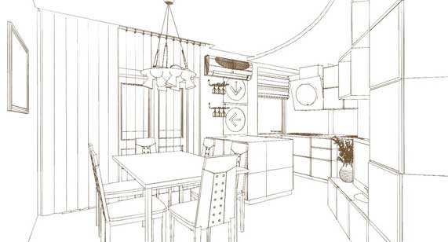

Эскизы итоговой планировки

Ескізи - це об'ємні картинки приміщень, які схожі на нариси «від руки» і які дають можливість наочно продемонструвати замовникові конкретну планувальне рішення. Те, що на плані виглядало як прямокутники, кола і овали, перетворюється тут в комоди, столи, стільці, дивани і шафи. Ескізи завжди виконуються в декількох варіантах, саме з них починається опрацювання архітектури, планування та дизайну приміщень, із зазначенням форм і рівнів стель і підлог, розташування меблів, декору та джерел освітлення. Одночасно робота над ескізами і їх обговорення з замовником дозволяють відповісти на виникаючі спірні питання.